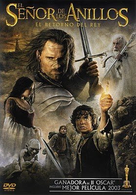

El Señor de los Anillos: El Retorno del Rey (Sinopsis)
Peter Jackson, por "El Señor de los Anillos": El Retorno del Rey (Sinopsis)
Sean Penn, por "Mystic River"(Sinopsis)
Charlize Theron, por "Monster"(Sinopsis)
Tim Robbins, por "Mystic River" (Sinopsis)
Renée Zellweger, por "Cold Mountain" (Sinopsis)
Sofia Coppola, por "Los in Translation" (Sinopsis)
Fran Walsh, Philippa Boyens y Peter Jacks, por"El Señor de los anillos: El Retorno del Rey "(Sinopsis)
Grant Major " El Señor de los Anillos"(Sinopsis)
Rusell Boyd, por "Master and Commander "(Sinopsis)
Richard King, por "Master and Commander "(Sinopsis)
Richard Taylor y Peter King, por "El Señor de los Anillos: El Retorno del Rey "(Sinopsis)
Buscando a Nemo " "(Sinopsis)
 Tras la caída de Saruman, los miem-bros de la Comunidad deben dirigirse a Gondor, último baluarte de la resistencia contra las tropas del mal, para la batalla final. Allí Aragorn asumirá el papel para el que ha sido destinado: dirigir las fuerzas de los Pueblos Libres de la Tierra Media y reclamar el trono de Gondor como heredero de Isildur. Reunidas todas sus fuerzas, podrán combatir con un mínimo de es-peranza contra el inmenso ejército de Sauron que asedia Minas Tirith, ciudad de reyes de los hombres. Mientras, Frodo (Elijah Wood) y Sam (Sean Astin), guiados por Gollum, continúan su difícil camino hacia el Monte del Destino para destruir el Anillo Único, en el que encontrarán terribles enemigos a su paso.
Una conmovedora historia, basada en la vida real de Aileen Wuornos, una prostituta ejecutada en otoño del 2002 en Florida tras haber sido condenada por el asesinato de seis hombres. Aunque Wuornos confesó los seis asesinatos, incluido el de un policía, afirmó haber matado sólo en defensa propia, al resistirse a ser víctima de violentos ata-ques mientras trabajaba como prostituta. Desesperada y al borde del suicidio, Wuornos (Charlize Theron) entra en un bar de Florida, donde conoce a Selby Wall (Christina Ricci), una joven enviada a vivir con una tía por sus padres para "curar su homosexualidad". Wuornos, víctima de una trágica infancia llena de abusos, se enamora de ella rápidamente, aferrándose a Selby como si de un salvavidas se tratara. Incapaz de encontrar un trabajo normal, pero desesperada por mantener su relación con Selby, Wuornos sigue trabajando como prostituta. Cuando uno de sus clientes se vuelve violento, Wuornos le dispara en defensa propia; será el primero de una trá-gica serie de asesinatos.
1860, Norteamérica. "Cold Mountain" es una película que habla de amor, amistad, naturaleza, supervivencia y de los cambios que tendrán lugar en un país convulsionado por la Guerra Civil. La historia sigue los caminos de tres personajes que dependen entre sí para su supervivencia física y espiritual. Por un lado, el soldado confederado Inman (Jude Law) quien, herido en la batalla, cruza el país para volver con la mujer que ama. En su camino hacia Ada (Nicole Kidman), Inman se encuentra con esclavos y rebeldes, soldados desertores, cazadores de recompensas y amigos y enemigos en cada esquina. Paralelamente, no menos peligros ofrece el camino que ha de emprender Ada, una mujer acostumbrada a una vida acomodada, que debe enfrentarse a un mundo exterior que desconoce para proteger la granja de su padre de la ruina y la guerra. La ayuda ines-perada le llega a Ada de una mujer tosca y primitiva llamada Ruby (Renée Zellweger) quien se convierte en una parte fundamental de su vida al ense-ñarle lo que es la fortaleza, la confianza y un increíble mundo real que Ada nunca había conocido. Ahora, a medida que se acercan unos a otros, In-man, Ada y Ruby nos cuentan una historia sobre la añoranza del hogar después de haber estado en el lado más salvaje, de la necesidad de paz tras la brutalidad de la guerra y en definitiva el anhelo por el amor y la fa-milia.
Cuando Jimmy Markum (Sean Penn), Dave Boyle (Tim Robbins) y Sean Devine (Kevin Ba-con) eran niños que crecían juntos en un peli-groso distrito de Boston, pasaban los días ju-gando al béisbol en la calle al igual que lo ha-cían muchos otros niños en el barrio obrero de East Buckingham donde vivían. No sucedía nada importante en su barrio. Hasta que Dave se vio obligado a tomar un rumbo que cambiaría las vidas de todos ellos para siempre. Veinticinco años más tarde, los tres se vuelven a encontrar por otro acontecimiento de gran trascendencia: el asesinato de la hija de 19 años de Jimmy. A Sean, que se ha hecho policía, le asignan el caso y junto a su compañero (Laurence Fishburne) recibe el encargo de desenredar este crimen aparente-mente sin sentido. También tienen que estar muy pendientes de Jimmy, ansioso por encontrar al asesino de su hija. Dave, relacio-nado con el crimen por una serie de circunstancias, se ve obligado a enfrentarse a los demonios de su propio pasado; demonios que amenazan con destruir su matrimonio y cualquier esperanza que pueda tener para el futuro. A medida que la investigación se estre-cha alrededor de estos tres amigos, se desarrolla un inquietante re-lato que trata de la amistad, la familia y la inocencia perdida dema-siado prematuramente.
Las Guerras Napoleónicas: Una época para el valor marinero más allá de la llamada del deber y las aventuras heroicas en los procelosos océanos. Y no hay nadie más valiente, más honrado y más comprometido con los esfuer-zos bélicos del Imperio Británico que Jack Aubrey (Russell Crowe), el capitán del HMS Surprise. En 1805, recibe órdenes de capturar el buque insignia de la Armada Francesa, un barco muy superior al suyo que responde al nombre de Acheron. Cuando el navío galo lanza un contraataque sorpresa, Aubrey, a pesar de los enormes daños sufridos por su barco y su leal tripulación, toma la decisión crucial de perseguir al Acheron por los mares del Sur y cumplir así su misión. Sobreviviendo a los témpanos de hielo de la Antártida, a una feroz tormenta en el Cabo de Hornos y a los rumores de un motín a bordo, Aubrey está decidido a torpedear la misión de alto secreto del Acheron de apropiarse del valioso cargamento de la flo-ta ballenera británica. Al llegar a las Islas Galápagos, Aubrey se entera de que los franceses han tomado también como prisioneros a la tripulación de un ballenero. Sin embargo, todos los planes de perseguir a los bucaneros se van al garete cuando Maturin (Paul Bettany), el fiel consejero de Aubrey y el cirujano a bordo de la na-ve, tiene que operarse a sí mismo para salvar la vida. Mientras se recupera en las islas, y siendo Aubrey indulgente con su afición por la botánica, traman un plan para atrapar al Acheron de una vez por todas, inspirándose en la ciencia.
La película cuenta el increíble periplo de dos peces –Marlin y su hijo Nemo– que se ven obligados a sepa-rarse en la Gran Barrera de Coral, ya que Nemo es capturado por un buceador. El pobre termina en la pe-cera de la consulta de un dentista desde la que se di-visa el puerto de Sydney. Marlin, con la ayuda de un simpático pero des-pistado pez llamado Dory –que carece de memoria inmediata–, se embar-ca en un peligroso viaje. El precavido padre acaba convirtiéndose en el hé-roe de una verdadera epopeya cuyo fin es rescatar a su hijo, que por su parte ha urdido un descabellado plan para volver sano y salvo a casa.